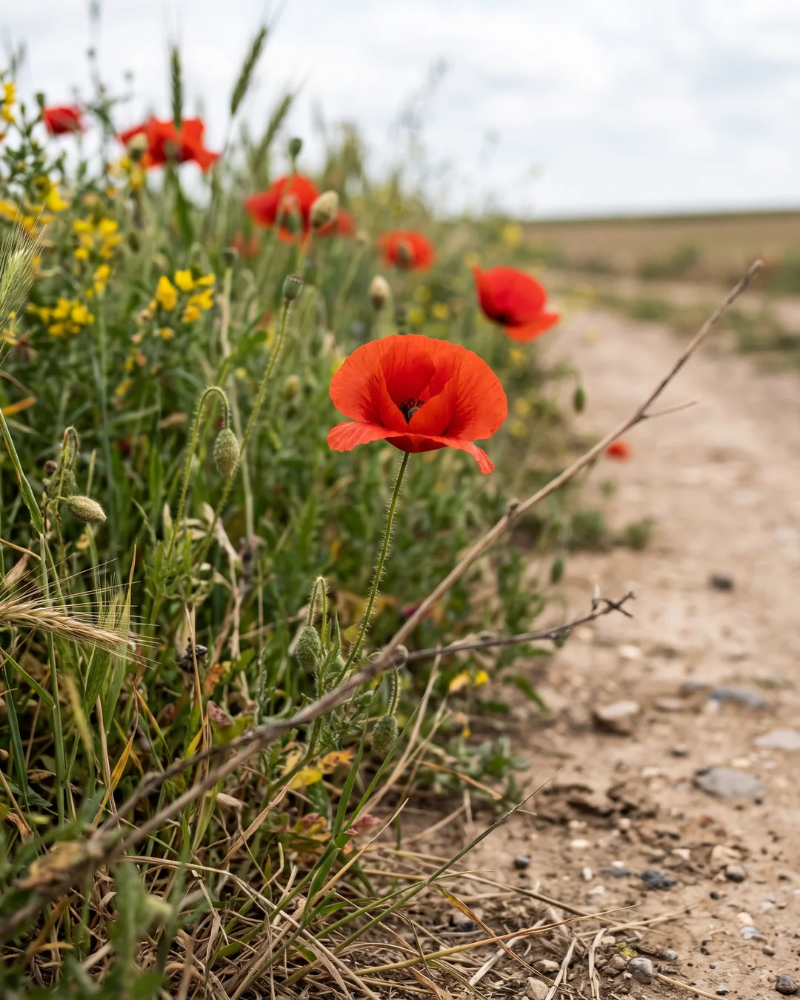

Case #16 · Flowers
About this case
Case #16 is closed. It was the daily case for November 16, 2026 and its theme was Flowers. The detectives of that day had two challenges: five images to judge as real photographs or AI-made pictures, and five one-sentence claims to judge as facts or fakes.
- AI-generated images: 2 of 5
- Fake claims: 2 of 5
Below you will find every answer. Each AI-generated image comes with the prompt that produced it, and each claim with the truth behind it and the details worth remembering, so you can check what you missed.
One of the fakes: “Besides following sunlight, sunflowers also turn according to noise.” The truth: Sunflowers do not turn toward sound; their daily movement is driven by light and their internal clock.
Want to sharpen your eye? Read our guide to spotting AI images or our guide to spotting fake news, then play today's case.
Images
-
Image 1
REAL
Real photograph
-
Image 2

REAL
Real photograph
-
Image 3

AI
The suspect's confession
A rose bush in a house garden after rain, with drops on the petals and a few roses already wilted or with brown edges; overcast sky light, natural colors.
-
Image 4

AI
The suspect's confession
Poppies at the edge of a dirt road in spring, photographed at ground level with a 50 mm lens at f/2.8; one in focus, the others blurred, and dry grass crossing the foreground.
-
Image 5

REAL
Real photograph
Fact or Fake
-
Claim 1
FAKE “Besides following sunlight, sunflowers also turn according to noise.”
Sunflowers do not turn toward sound; their daily movement is driven by light and their internal clock.
- This east-to-west daily movement is called heliotropism.
- There is no scientific evidence that sunflowers react to noise.
-
Claim 2
FACT “The heaviest single flower in the world can weigh 11 kg (24 lb).”
Rafflesia arnoldii, from the rainforests of Sumatra and Borneo, can weigh about 11 kg (24 lb).
- It can reach 1 m (3.3 ft) across.
- It has no visible leaves, stems or roots.
- It smells like rotting meat to attract the carrion flies that pollinate it.
-
Claim 3
FAKE “In Norway, bioluminescent flowers are used to light sidewalks without using electricity.”
No country lights its streets with flowers; the glowing paths that exist use non-living materials.
- Poland and the Netherlands have bike paths with phosphorescent stones.
- The stones charge in sunlight by day and glow at night.
-
Claim 4
FACT “The first speculative bubble in history is considered to have been caused by tulips.”
Tulip mania in the Netherlands peaked around 1637, when bulb prices soared and then collapsed.
- Rare color patterns, caused by a virus, made some bulbs highly prized.
- At the peak, one bulb reportedly cost as much as a large Amsterdam house.
-
Claim 5
FACT “One plant takes 80 to 100 years to mature and then flowers only once in its life.”
Puya raimondii, the “Queen of the Andes” of Peru and Bolivia, flowers once and then dies.
- Its giant flower spike can top 10 m (33 ft).
- It releases its seeds before dying.